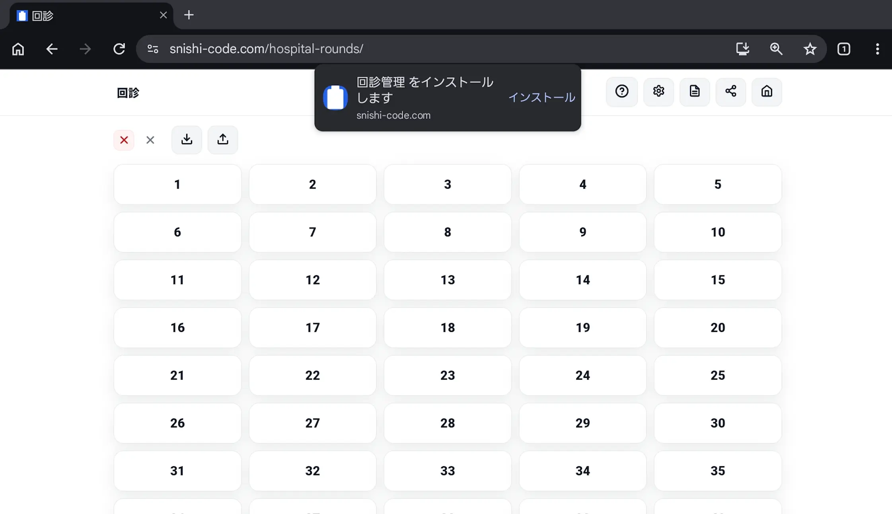
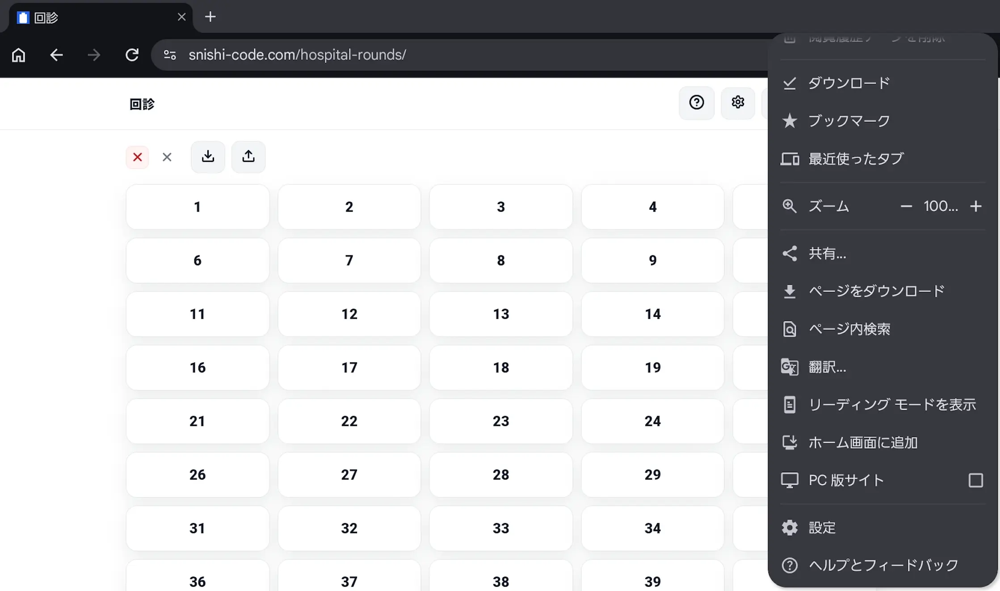
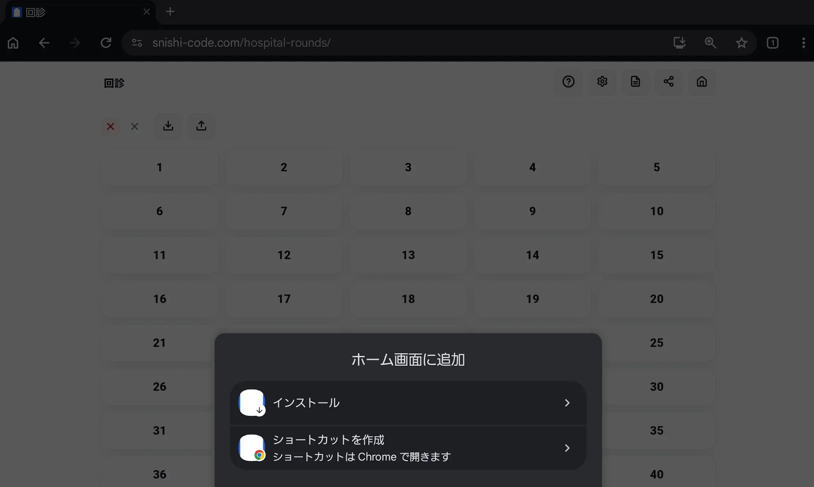
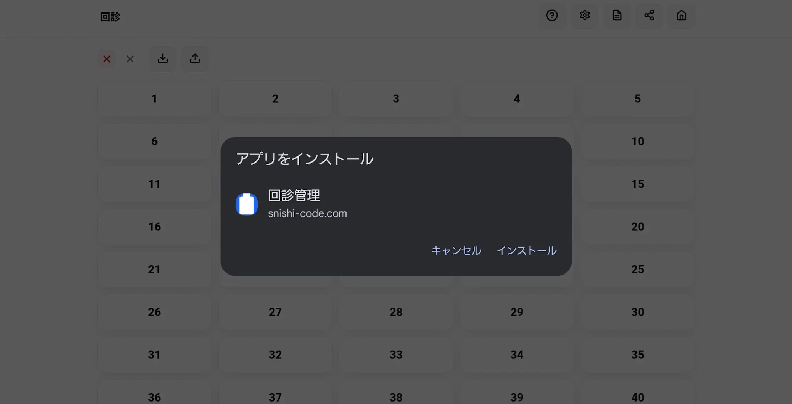
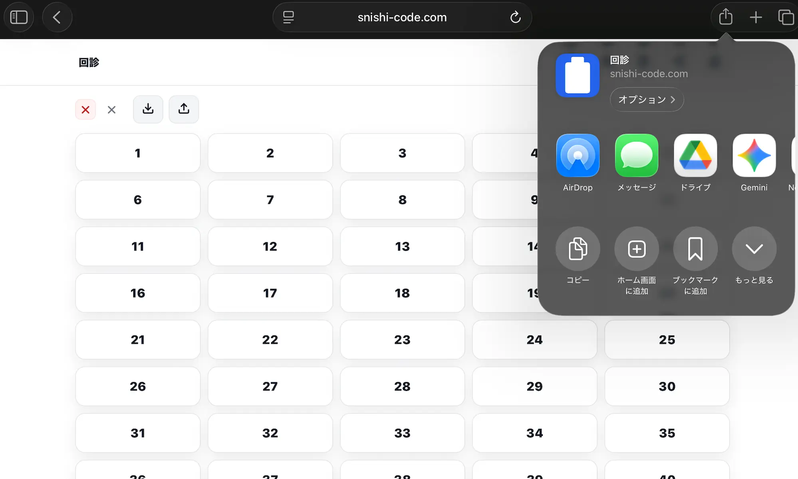
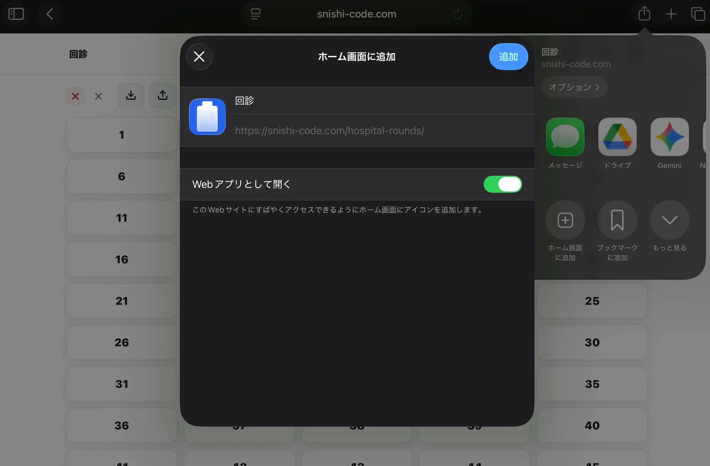
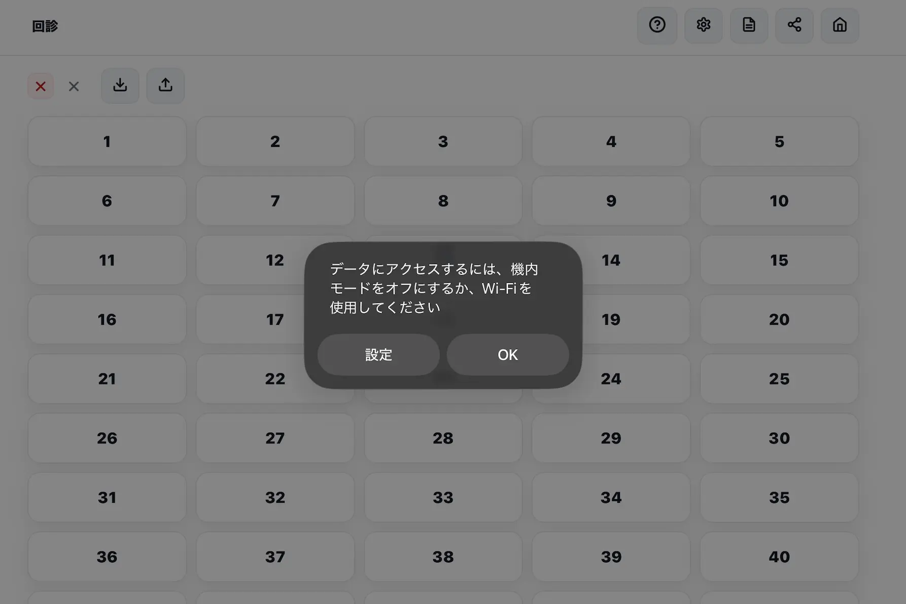
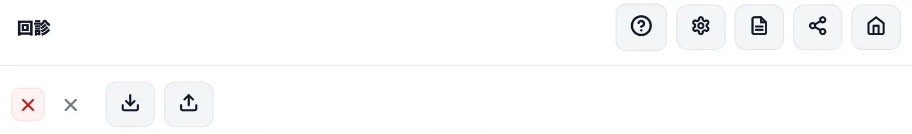

回診アプリ — はじめに
このアプリについて
回診時の患者情報をスマホやタブレットで手軽に記録・管理するためのアプリです。 モバイル電子カルテのような高度なものではなく、名簿やメモ帳を置き換えることを目的としています。 医師向けを想定していますが、カスタマイズ次第ではコメディカルの方も使用可能です。
何が便利になるか？
こんな時間がなくなります。
- 患者名簿を印刷し、電子カルテを見ながら手書きでメモする
- この患者さんって何がプロブレムだっけ？今日って検査予定だったっけ？と思い電子カルテに戻る
- 電子カルテでコピペしたり、紙にメモした内容を見ながら再度打ち込む
- せっかくとった所見を忘れて再度取りに行く
こんなリスクがなくなります。
- 上級医に報告する時、誰について何を報告しないといけなかったか忘れて微妙な雰囲気になる
- 患者名簿を紛失する
ブラウザ上で動作するため、実際の使用を試すことができます。実際に使用する際はホーム画面にアプリを追加しての使用を推奨します。
このアプリは PWA（Progressive Web App） という形式で作られています。 アプリストアからインストールする必要はなく、ブラウザで開いたページをそのままホーム画面に追加するだけで、普通のアプリのように使えます。Wi-Fi 不要でオフラインでも動作します。 ブラウザと異なり入力したデータも保持されますが注意も必要です。 Word で作業中にこまめに上書き保存するのと同じ感覚で、上矢印アイコン（出力）から JSON ファイルとして定期的に保存しておくことを推奨します。 → 詳細は 05_データの取込・保存 を参照
スマホに個人情報を入力して大丈夫？
本アプリは最初のインストール後はインターネット接続不要（完全オフライン動作）を前提として作成しています。
外部へデータを送信する機能は実装していません。ソースコードは GitHub で公開しています。
もちろん、アプリがオフライン動作するとしても、ネット回線がある個人のスマホで使うのは、それが個人情報になる場合はアウトです。個人端末で使用する場合は、部屋番号と検査予定のみなど、個人情報に当たらないものだけを入力して下さい。論文を書くときに個人情報に配慮するのと同様です。
本アプリを最大限使用するためには、病院管理のオフライン動作端末と QR コードリーダーが必要です。責任者やシステム担当者の許可を得て下さい。
ご利用にあたっての注意
- 本アプリは個人が開発したものです。利用は自己責任でお願いします
- 動作の正確性・安全性について、開発者は一切の責任を負いません
- 医療機関での導入にあたっては、施設のセキュリティ担当者・情報管理部門の承認を得た上でご使用ください
対応環境
| OS | 動作確認端末 | ブラウザ |
|---|---|---|
| Android | Galaxy S24 | Chrome |
| Android | Galaxy A11+ | Chrome |
| Mac | MacBook Air M5 | Chrome |
| iPad | iPad A16 | Chrome, Safari |
| iPhone | （確認予定） | Chrome, Safari |
ホーム画面に追加することでアプリとしてインストールできます。
インストール方法
Android（Chrome）

はじめてアプリを起動した時にポップアップが出ます。

もし出ない場合はメニューから「ホーム画面に追加」を選択して下さい。

「ショートカットを作成」を押すと通常の Web リンクとなります。アプリのようにオフラインで動作させたい場合は「インストール」を選択して下さい。

再度ポップアップが出るので「インストール」を選択すると数秒でインストールされます。端末の設定によりますがホーム画面かアプリ一覧にアイコンが表示されているはずです。
iPad（Safari）

iPad では Android のようにポップアップは出ません。上部のシェアボタンから「ホーム画面に追加」を選択してください。

「Web アプリとして開く」が ON になっているのを確認して追加してください。Android のように表示は出ませんが数秒でインストールが完了しホーム画面に追加されているはずです。

iPad の場合は機内モードなどでアプリを起動するとポップアップが表示されます。OK をタップしてそのままオフラインで使用することを推奨します。
PWA はオンラインになった瞬間、Web 上の最新版を確認して自動でアプリが更新されます。 データが入力されたままだとデータが破損するリスクがあるため、もしオンラインにする場合は先にデータを保存してください（05_データの取込・保存）。 以前のバージョンに戻したい場合は GitHub から任意のバージョンに戻せます。システム担当者に確認してください。
画面構成

ヘッダーには左から以下のボタンが並んでいます。